来源：https://chaojifeng.feishu.cn/docx/HAE0dyXxAoJIUUxQVnLcdfMlndf
我叫超级峰，先自我介绍一下。
我现在的主要身份是一家农信互联网独角兽公司的产品负责人，听起来挺传统的对吧？但除了上班之外，我还有另一个身份——AI 独立开发者。
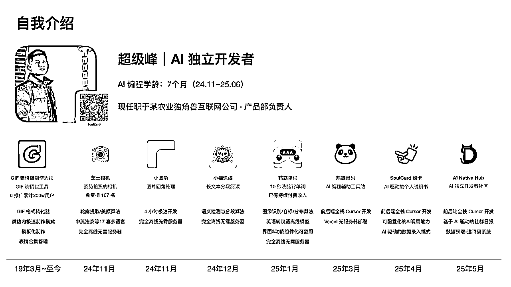
说实话，六个月前的我，对 AI 编程完全是零基础。我大学学的是软件工程，毕业后做了几年产品经理，虽然有一些技术背景，但真正动手写代码已经是很久以前的事了。
去年底，当 Cursor 这类 AI 编程工具开始在小众圈子里传播的时候，我抱着试试看的心态开始接触。那时候大部分人还接触不到这些国外的工具，我算是全周期见证了 AI 编程从小众到逐渐普及的过程。
六个月的 AI 编程学龄，这个时间其实不长，但就是在这短短半年里，我的生活发生了翻天覆地的变化。从一个朝九晚五的上班族，到现在每个月能够上线 2 款左右的产品，每一款从外部反馈来看都还不错。
我目前在 AI 编程的边界探索上投入了很多精力，虽然还没有在单个产品上做太深度的投入，但是我发现了一个巨大的可能性：
普通人，真的可以通过 AI 编程改变自己的命运。我不是什么天才，也不是什么技术大牛。我就是一个在农信互联网公司上班的普通产品经理，工作之余想要探索一些新的可能性。如果我能做到，相信你也可以。
为了帮助更多想要尝试 AI 编程的朋友，我还运营了一个 AI 编程互助群。这个群是完全免费的微信社区，大家可以在里面提问题、交流经验。我发现，很多人其实都有创作的冲动，只是缺少一个合适的工具和正确的方法。
AI 编程，恰恰就是这样一个工具。它不仅仅降低了技术门槛，更重要的是，它让我们普通人也能够把脑海中的想法变成现实。
接下来，我要跟你分享的，不是什么高深的技术理论，而是我这六个月来的真实经历和实战经验。从零基础到能够独立开发 App，从想法到变现，我会把这个完整的过程毫无保留地分享给你。
如果你问我，AI 编程到底有多强大？我用一个真实的案例来回答你。
去年 11 月份，我人生中第一次通过 AI 编程开发了一个完整的产品——芝士相机。
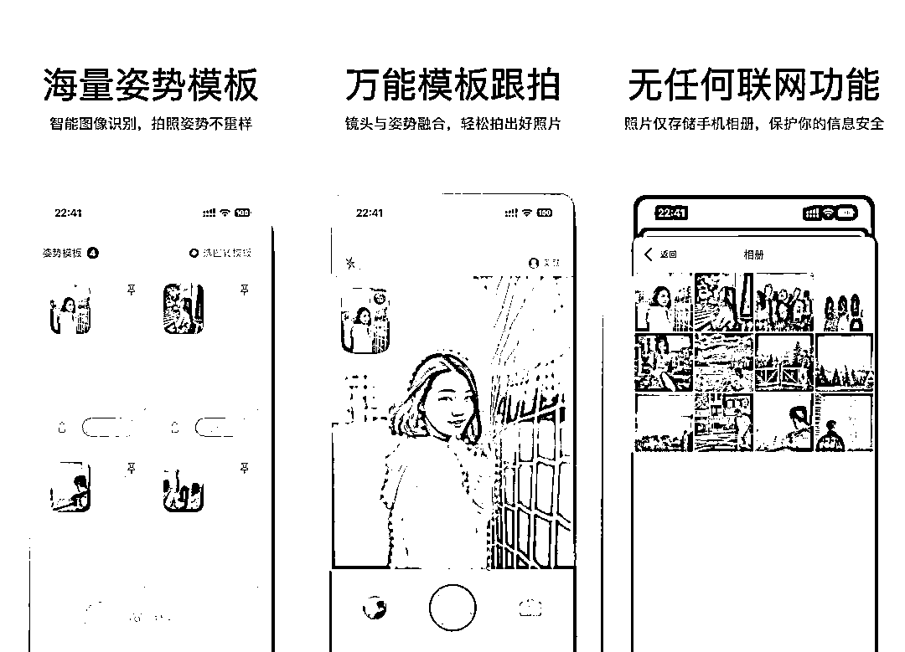
这款 App 的开发过程让我自己都感到震撼：45 天了解什么是 AI 编程，真正的开发时间只用了 1-2 天。没错，你没有听错，就是 1-2 天。
更让我意外的是，这款 App 在上线大概一周左右，就登上了 App Store 的免费榜第 107 名。
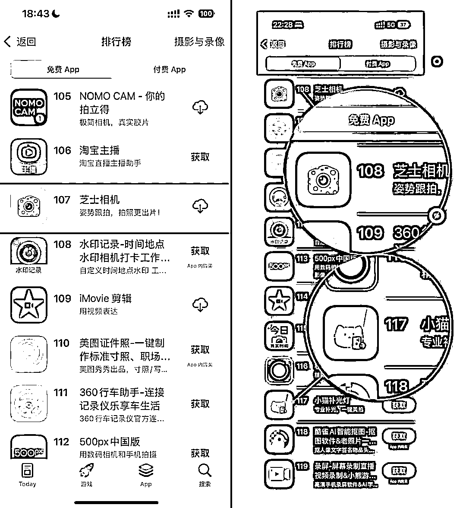
要知道，要在 App Store 免费榜上到 100 多名，一天的下载量需要达到 5000-6000 以上。这个数据量级，对于我这样一个零经验的个人开发者来说，简直就是天方夜谭。
但 AI 编程让这个"不可能"变成了"可能"。
让我给你一个对比，你就知道 AI 编程的威力有多强大：
2019 年，我用手工编程的方式，开发了一款叫"GIF 表情包制作大师"的微信小程序。那时候我重新学习编程，花了大量的时间钻研技术细节，整个开发周期拖了很久。虽然最终这款产品积累了 200 万用户，但过程非常痛苦。
2024 年，我用 AI 编程的方式，45 天入门，1-2 天开发，直接做出了能够登榜的 App。效率差异，简直是云泥之别。
芝士相机这款产品，主要是为了解决一个非常具体的痛点：帮助男朋友给女朋友拍出更好看的照片。听起来很简单，但背后的技术实现其实并不简单。
这款 App 有两套核心算法：
除了算法之外，我还在这款 App 里实现了 13 套多语言支持。过去如果要做多语言，我可能需要找翻译，无论是费用还是时间成本都很高。但通过 AI 的能力，我直接让 AI 帮我实现了 13 种不同国家的语言。
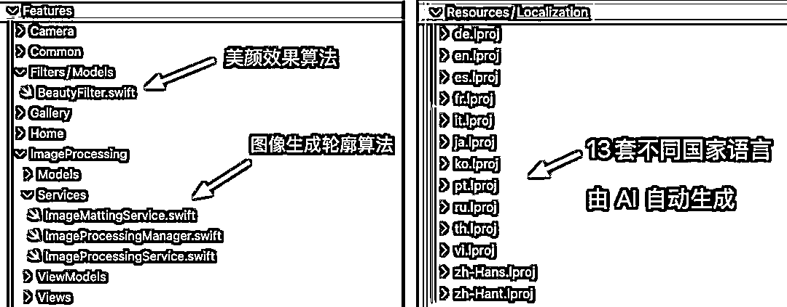
最终的效果如何呢？芝士相机在国内是免费的，但在国外是付费的。即使是 1 美元的定价，也会偶尔有海外用户付费。这从侧面证明了，AI 生成的多语言在结合产品价值的情况下，是能够达到商业化标准的。
更让我自豪的是，这款 App 是完全离线的，无需服务器。这样既降低了我的运营成本，也让用户不用担心数据隐私问题。
这就是 AI 编程的神奇之处：它不仅仅是让你写代码更快，而是让原本需要团队才能完成的复杂功能，一个人就能搞定。
但这还不是最厉害的。接下来我要告诉你的，是我如何总结出了一套可复制的成功方法...
芝士相机的成功不是偶然的。在后续的几款产品开发中，我逐渐总结出了一个公式：
爆款 App = 精准的需求场景 × 高效的 AI 赋能 × 合适的曝光渠道
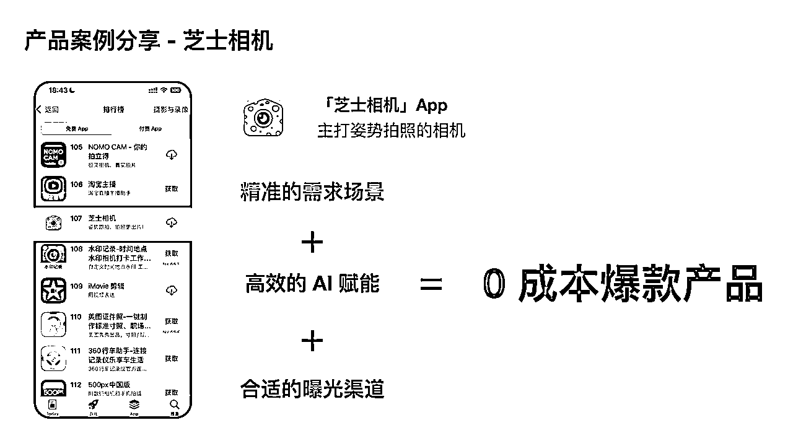
让我详细拆解这三个要素，因为掌握了它们，你也能复制我的成功。
芝士相机为什么能成功？因为它切中了一个非常精准的需求场景：男朋友帮女朋友拍照。这听起来很普通，但实际上非常精准。它不是泛泛的"拍照美化"，而是专门针对一个特定的使用场景。
我为什么会想到这个场景？因为这就是我自己的痛点。作为一个直男，我经常因为拍照技术不好被女朋友吐槽。我相信这是很多男朋友的共同困扰。
在开发之前，我特地去小红书搜索了"拍照姿势"这个关键词。你知道我发现了什么吗？搜索结果满屏都是相关内容，很多笔记都有几万甚至几十万的点赞。这说明这个需求是真实存在的，而且用户群体很大。
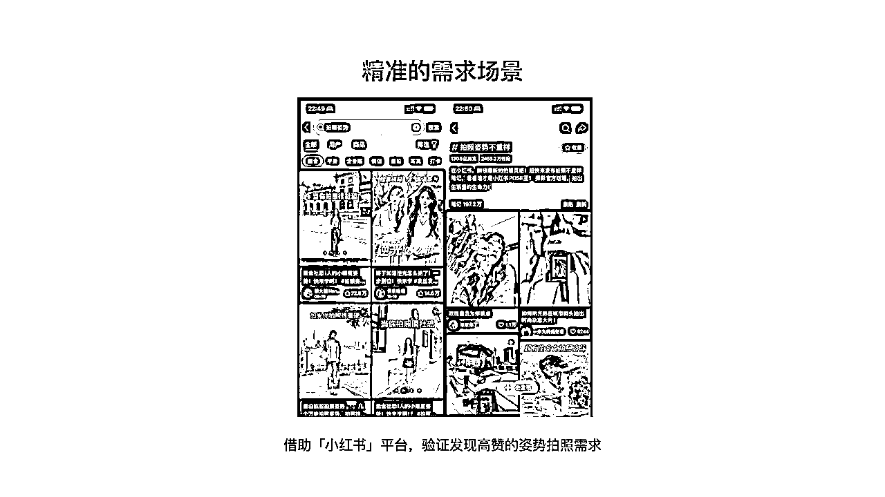
但市面上针对这个垂直场景的产品，几乎没有。大部分拍照 App 都是泛泛而谈，没有专门针对"男朋友给女朋友拍照"这个具体场景。这就是机会。
后来芝士相机发布后，很多人在评论区留言说："我脑子里早就有这个想法，但一直没有做。"这更证明了我的判断：细分场景，完全可以容纳个人开发者去做。
对于我们个人开发者来说，一个巨大的优势就是成本低。如果能够切中 1000 个铁杆用户，就能够提供比较高的商业价值。而大厂因为成本结构的问题，往往看不上这样的细分市场。
我的建议是：一定要基于你自己的痛点去开发产品。只有你自己真正需要这个产品，你才会在第一个版本上线后，因为被动的场景触发而持续使用它，进而持续迭代它。
有了精准的需求场景，接下来就是能力问题：你能不能把这个想法实现出来？
在 AI 编程之前，芝士相机这样的产品，我是绝对做不出来的。为什么？因为它需要图像识别和处理算法，这些技术对于个人开发者来说门槛太高了。但 AI 编程让"不可能变成了可能"。
芝士相机的核心功能是能够自动抠出图像中的轮廓，这个功能如果让我自己去研究，可能需要花几个月时间。但通过 AI 编程，我直接让 AI 帮我实现了这套算法。
我并不知道它具体是怎么实现的，我只知道它实现了，并且达到了我的目标。这就够了。这就是 AI 编程的魅力：你只需要描述你想要什么，AI 会帮你实现怎么做。
特别是在 iOS 平台上，苹果官方提供了很多现成的算法能力。通过 AI 编程，我可以很方便地调用这些技术，而不需要深入学习每一个技术细节。13 套多语言支持也是同样的道理。过去我需要找翻译，现在我直接让 AI 帮我搞定。不仅效率提升了，成本也大大降低了。AI 赋能的本质，是让个人开发者具备了过去只有团队才能拥有的能力。
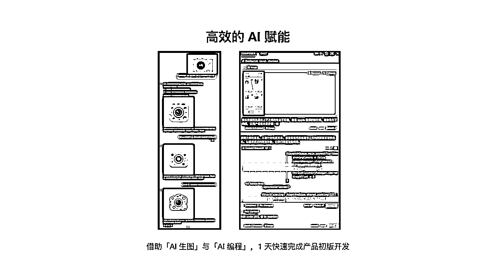
有了好产品，还需要让用户知道。对于我们个人开发者来说，找到合适的曝光渠道至关重要。
芝士相机的推广，我主要用了两个渠道：
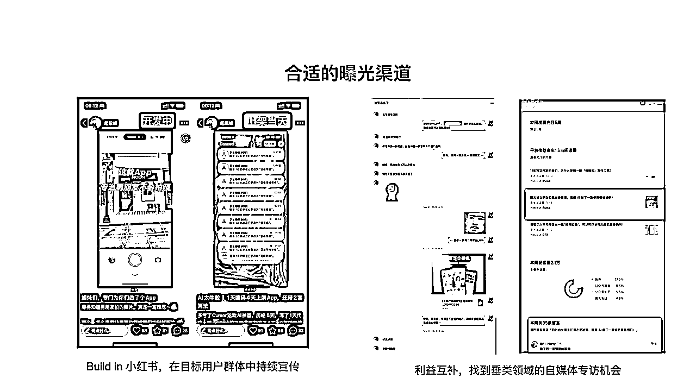
第一个渠道：小红书因为芝士相机的目标用户是女性，而小红书的女性用户比较多。更重要的是，"男朋友帮女朋友拍照"这个场景很容易产生共情，很适合在小红书这样的内容平台进行传播。
第二个渠道：公众号当时有一个专栏的博主邀请我写稿，我就简单介绍了芝士相机的开发过程。没想到这篇文章在公众号上也获得了不错的传播效果，评论区里很多男性用户表示有同样的痛点。
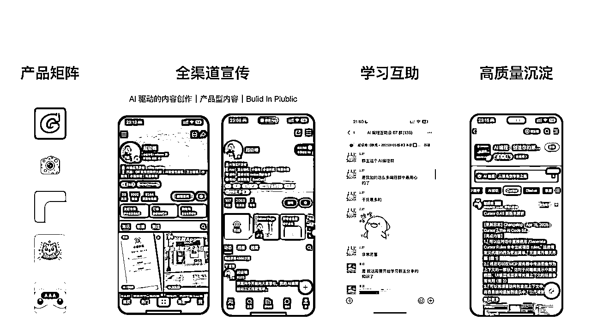
有趣的是，小红书和公众号形成了很好的互补：
这样就形成了一个完整的用户触达闭环。
最终的结果：芝士相机通过零成本的推广方式，实现了 App Store 免费榜第 107 名的成绩。
这三个密码看似简单，但组合起来威力巨大。更重要的是，这套方法是可以复制的。
但光有方法还不够，你还需要知道具体的实施路径。接下来，我要给你一个完整的学习攻略...
很多人问我：想要学 AI 编程，应该从哪里开始？
基于我这 6 个月的实践经验，我把 AI 编程的学习路径分为四个等级，从简单到困难。你可以根据自己的需求和能力，选择合适的起点。
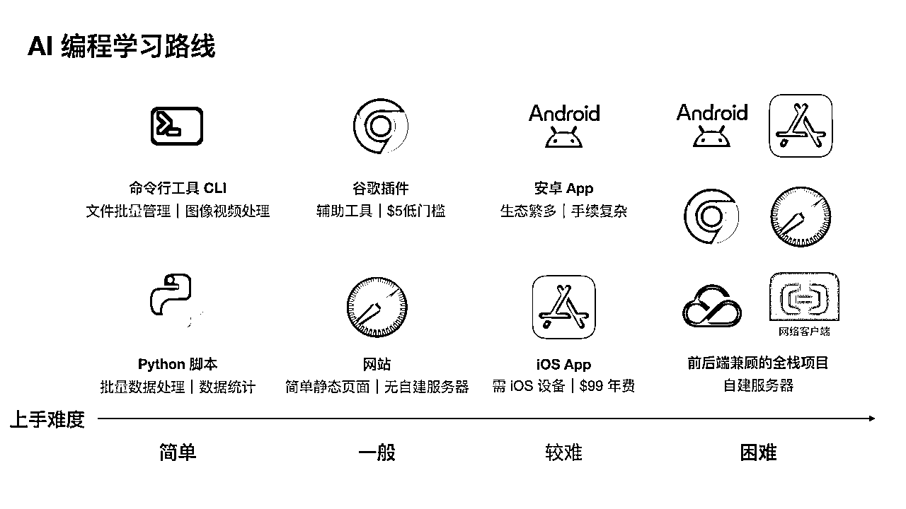
适合人群：完全零基础，想要快速体验 AI 编程效果的朋友
这是我认为最简单的入门方式。你不需要搭建复杂的环境，也不需要学习很多技术概念，就能立即看到效果。
命令行工具比如你想要批量处理图片，把所有图片都调整成 100×100 的尺寸。过去你可能需要一张张手动处理，现在你只需要让 AI 生成一个命令行工具，输入图片地址就能一键搞定。
Python 脚本我在开发鸭霸单词的时候，需要处理大量的单词数据。原始数据格式不统一，如果手动处理会非常麻烦。我就让 AI 帮我生成了三套脚本：
整个流程完全自动化，大大提升了效率。
这两种方式的最大好处是立即就能看到效果。你只需要把 AI 生成的内容复制粘贴，执行一下就能解决实际问题。
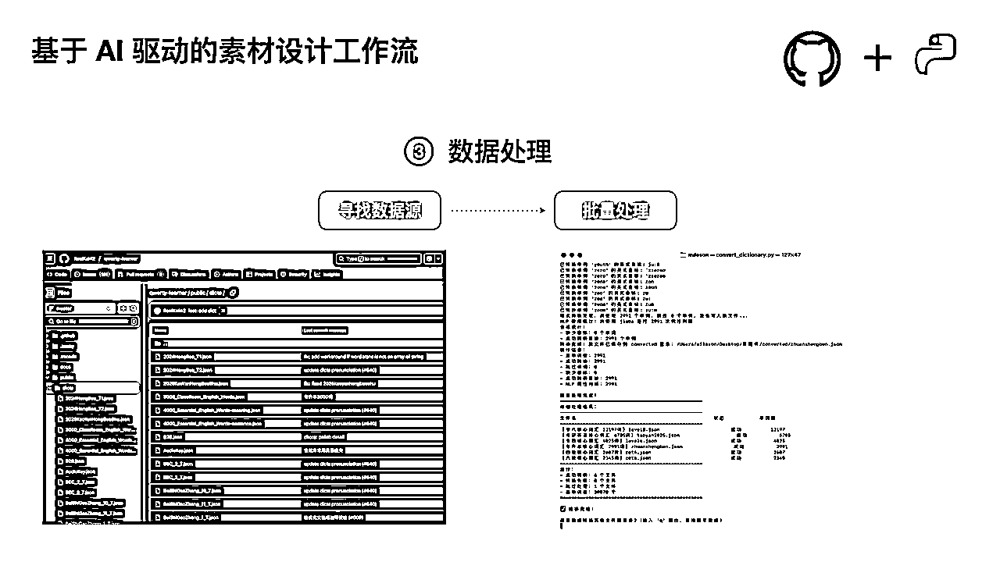
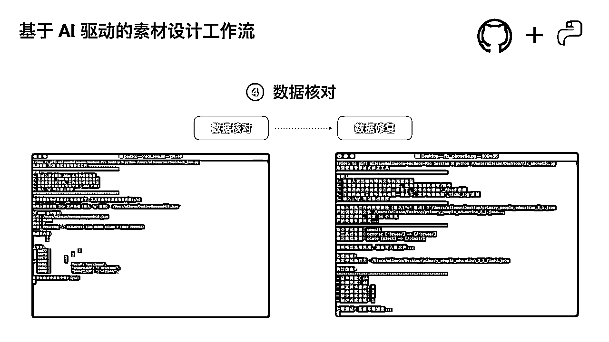
适合人群：想要开发有界面的产品，但不想涉及服务器的朋友
谷歌插件我的第一个 AI 编程作品其实是一个谷歌插件，用来把豆瓣的书籍信息一键同步到 Notion 数据库。
谷歌插件的优势是：
静态网站就像之前流行的"一句话生成贪吃蛇游戏"，这些都属于静态页面的范畴。你可以用它来展示作品、分享内容，或者制作一些简单的工具页面。
这个级别的好处是既有界面，又不需要复杂的后端技术，非常适合进阶学习。
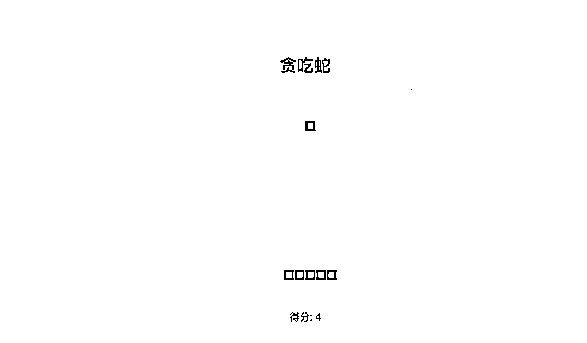
适合人群：想要做出真正有商业价值产品的朋友
如果你要在 iOS 和 Android 之间选择，我强烈推荐优先选择 iOS。为什么？基于我的实际经验：
当然，iOS 开发也有成本：需要 Mac 设备（Mac mini 二手 3000 左右），以及 99 美金的年费。但相比于潜在的收益，这个投入是完全值得的。
我的几款 App（芝士相机、鸭霸单词、小圆角、小猫快读）都是 iOS 平台开发的，每一款都实现了不同程度的商业化。
适合人群：想要开发复杂产品，愿意学习服务器技术的朋友
这个级别需要同时掌握前端和后端技术，还要涉及服务器部署和维护。我最近开发的三款产品都属于这个范畴：
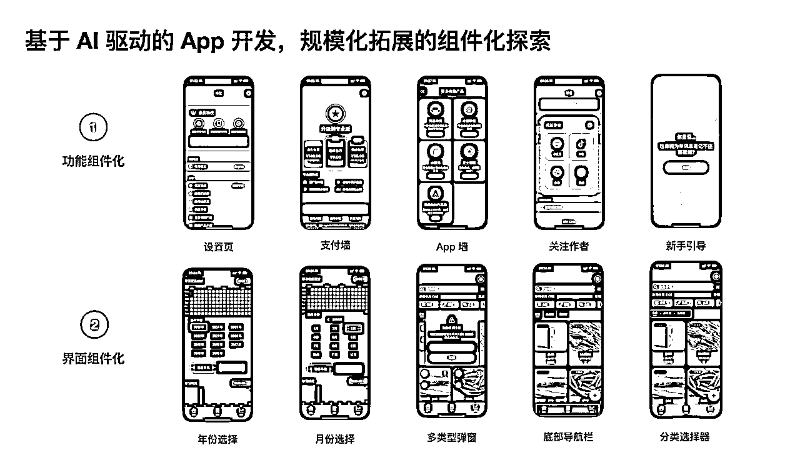
这些产品都有完整的用户系统、数据库、API 接口等，技术复杂度比较高。
虽然 AI 编程大大降低了开发难度，但你仍然需要理解一些基本概念，比如数据传输、服务器部署、域名配置等。
我的建议
如果你是新手，建议按照这个顺序逐步进阶：
记住，AI 编程的核心不是写代码，而是与 AI 对话。从简单的一句话指令，到基于文档驱动的复杂开发，这是一个循序渐进的过程。
但仅仅知道怎么开发还不够，最重要的是要能赚到钱。接下来，我要分享我是如何实现稳定变现的...
做产品的最终目的，当然是要能赚到钱。
经过这 6 个月的实践，我在变现这件事上积累了一些真实的数据和经验。今天我要毫无保留地分享给你，包括一些具体的收入数字。
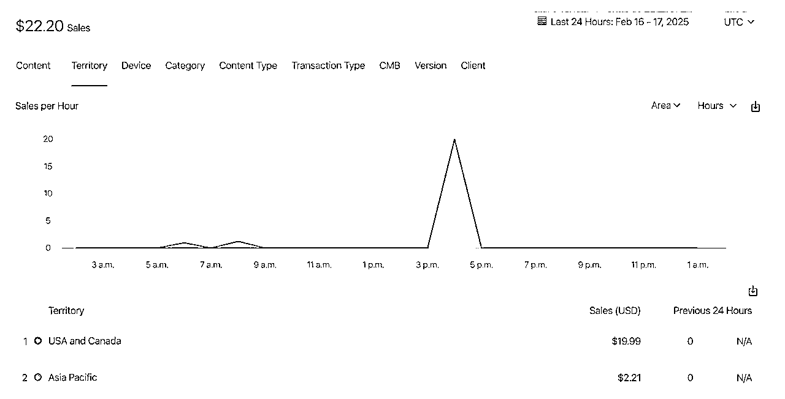
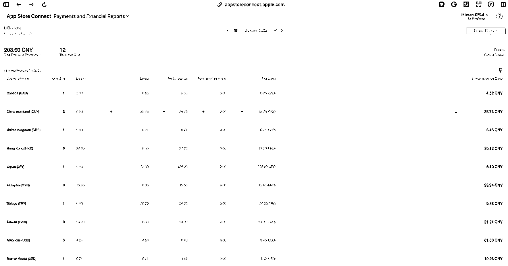
在我所有的产品中，鸭霸单词是变现效果最好的。
这款产品我花了最长的时间开发，从 1 月持续到 2 月，甚至春节期间我都在优化它。为什么投入这么多时间？因为这是我第一次尝试在 App 中接入付费功能。
收入数据：
鸭霸单词的商业模式是 iOS 内购，包括国内版和国际版都有付费用户。这证明了一点：通过 AI 编程开发的产品，完全可以达到商业化的标准。
很多人担心做 iOS 开发的成本问题。App Store 的开发者账号年费688元，对于收入不确定的个人开发者来说，这确实是一笔开支。
但我的实际体验是：仅仅用了 2-3 个月，我就通过被动收入完全赚回了这个费用。
这个数据对我来说非常重要，因为它证明了 AI 编程创业的可行性。很多独立开发者可能一年只开发一款产品，如果用户太少，甚至可能赚不回开发者账号的费用。但通过 AI 编程，我在短时间内开发了多款产品，风险被大大分摊了。
芝士相机采用了不同的变现策略：
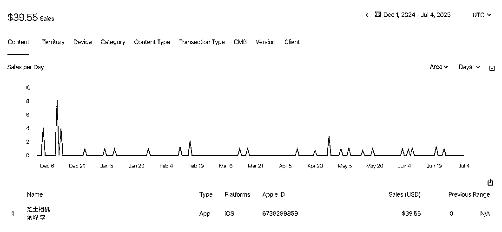
虽然芝士相机的付费收入不如鸭霸单词，但它偶尔也会有海外用户付费。更重要的是，它为我积累了宝贵的产品经验和用户反馈。
最让我感到兴奋的是"被动收入"这个概念的实现。
什么叫被动收入？就是你不需要主动推广、不需要持续运营，产品自己就能带来收入。
我的几款 App 现在都处于这种状态：
但它们仍然在持续产生收入。
这种感觉真的很棒，特别是当你在睡觉的时候，手机突然收到 App Store 的收入通知，那种成就感是无法言喻的。
基于我的实践经验，我总结了几个变现策略：
现实 check：我不会告诉你 AI 编程能让你一夜暴富，但我可以确认的是，它确实能够为普通人提供一个可行的副业变现渠道。
重点是，你需要开始行动。光看不练，永远不会有收入。
那么，具体应该怎么开始呢？
写到这里，我想你已经看到了 AI 编程的巨大潜力。
从我这个农业公司产品经理的 6 个月逆袭之路，到具体的产品案例，再到完整的学习路径和变现经验，我已经把我所知道的一切都分享给了你。
现在的问题是：你准备好开始行动了吗？
我深刻地感受到，我们正处在一个创造者最好的时代。
AI 编程让"从不可能变成可能"这句话变成了现实。过去需要团队才能完成的复杂产品，现在一个人就能搞定。过去需要几个月甚至几年的开发周期，现在几天就能出成果。
更重要的是，这个窗口期不会一直存在。随着 AI 编程工具的普及，门槛会越来越低，竞争也会越来越激烈。早入场的人，会享受到最大的红利。
就像 2019 年我做微信小程序的时候，那时候小程序生态刚起步，很容易获得大量用户。现在再做小程序，难度就大了很多。
基于我的观察和实践，我认为有三类人特别适合学习 AI 编程：
第一类：互联网研发流程上下游人员（最适合）包括产品经理、设计师、研发工程师、测试工程师、运营人员等。你们对产品开发流程有基本认知，学习成本最低。
第二类：互联网从业人群包括市场推广、产品实施、运维、新媒体运营、互联网企业管理者等。虽然不直接参与研发，但对软件产品有基本了解。
第三类：非互联网人群（未来参与者）包括传统企业的新媒体运营、文员、大学生等。随着 AI 编程工具的发展，这个群体会越来越多地参与进来。
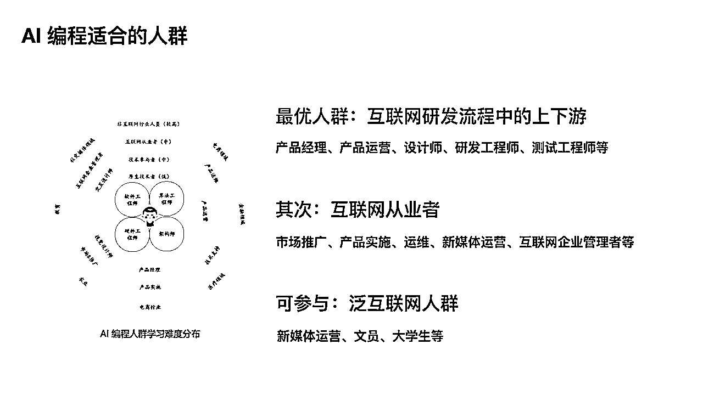
如果你属于前两类，那恭喜你，你已经具备了很好的基础。如果你是第三类，也不要担心，AI 编程的门槛正在快速降低。
如果你决定开始学习 AI 编程，我的建议是：
六个月前，我只是一个对 AI 编程完全陌生的农信互联网公司产品经理。
六个月后，我已经开发了多款产品，实现了稳定的被动收入，更重要的是，我找到了一种全新的生活方式。
我不是天才，你也不需要是。AI 编程的出现，让普通人也有了改变命运的机会。关键是，你要敢于开始，敢于尝试，敢于把想法变成现实。
我经常对朋友说：执行力比想法更重要。很多人脑子里都有好想法，但只有那些真正动手去做的人，才能享受到最终的成果。
现在，轮到你了。不要再等待了，不要再犹豫了。拿起你的电脑，打开 AI 编程工具，开始你的第一行代码。也许六个月后，分享逆袭故事的人就是你。
我是超级峰，一个通过 AI 编程改变生活的普通人。如果这篇文章对你有帮助，欢迎点赞分享。如果你想要交流 AI 编程的经验，也欢迎在评论区留言。
让我们一起，在这个创造者最好的时代，用 AI 编程开创属于自己的未来。